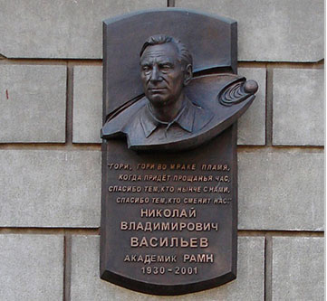
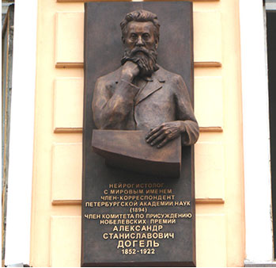
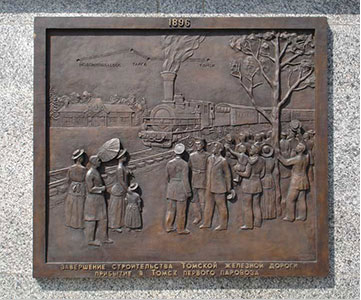
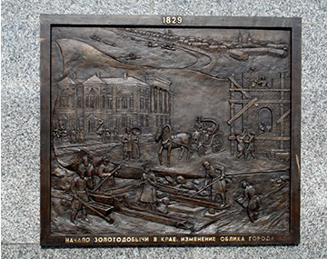

Изготавливаем
СКУЛЬПТУРНЫЕ ПРОИЗВЕДЕНИЯ НА ЗАКАЗ
Доставка и установка в любом городеМемориальная доска
По следам кумиров: куда ведет мемориальная доска

Выдающиеся исторические персоны оставляют создают себе нерукотворные памятники при жизни. После их ухода принято увековечивать память обо всем, что связано с деятельностью знаменитых людей. Мемориальная доска, установленная на здании, иногда рассказывает больше, чем учебник истории. Изготовление скульптуры для размещения рядом с домом не всегда возможно. А компактную плиту с профилем персоны и поясняющей надписью без труда закрепляют на фасаде.
После ухода выдающийся человек становится легендой. Личность растворяется в произведениях, достижениях, открытиях, подвиге. Образ неотделим от наследия, доставшегося новым поколениям. Формируется абстрактный образ, который где-то жил, учился, работал, проводил время.

Историческая память в деталях
Узнать больше о повседневной жизни людей, вошедших в историю, помогают мемориальные доски. Памятные знаки размещают на фасадах зданий, связанных с личностью. По ориентирам на стенах можно составить целый маршрут, гулять по улицам и представлять, как жил любимый писатель, поэт, великий ученый или герой войны.
Для изготовления мемориальной доски используют камень или применяют художественное литье. Гранитные знаки отличаются сдержанностью: на них размещают пояснительную надпись и делают гравировку. Прочный камень редко используют для создания объемных портретов или высечения профиля. Твердая структура гранита не в полной степени передает внешнее сходство.
Барельеф
Бронзовый барельеф: больше, чем декоративный элемент

При упоминании барельефа сразу вспоминается Петербург, где каждое историческое здание увенчано изящными изваяниями. Камень и металл в руках художников разных эпох превратились в уникальные памятники архитектуры. Изготовление скульптуры, привлекающей не меньшее внимание, чем величественные дворцы, – настоящее искусство.
Барельефу в архитектуре отводится скромная и достойная роль – подчеркнуть красоту, придать завершенность оформлению здания или памятника. Иногда по воле художника барельеф превращается в грандиозную монументальную композицию, выполненную по технологии художественное литье.

Магия бронзовых барельефов
Бронза – великолепный материал для сочетания различных эффектов, усиливающих выразительность скульптуры. Удивительные свойства металла ярко проявляются при создании барельефов. Перед художником стоит непростая задача – на плоской основе создать объемное изображение, пластичное, характерное, притягательное.
В современной лаконичной архитектуре практически не осталось места изящным элементам. Тем не менее, барельефы остаются актуальными элементами декорирования архитектурных объектов:
Эмблема. Фирменный знак или логотип, воплощенные в благородной бронзе, подчеркивают респектабельность компании и серьезность бизнеса. Скульптура на заказ может быть приурочена к важному событию, стать частью ребрендинга. Одинаково уместна на фасаде здания и в холле офиса.
Герба. Геральдические знаки – незыблемые символы величия, достоинства, высоких достижений. Предмет гордости поколений и государств. Воплощение в барельефной композиции подчеркивает уважение к истории, традициям или формирует почтительное отношение к новым и возрожденным символам.
Глубокое изучение истории родного города, края и даже собственной семьи подчас преподносит открытия, достойные увековечивания в бронзе и сохранения для будущих поколений.
Портрет. Может быть выполнен как отдельное изображение, часть мемориальной доски, элемент памятного монумента. Лучше всего купить скульптуру из бронзы – несколько тысяч лет в металле увековечивают образы выдающихся деятелей, бесстрашных героев, людей, чьи заслуги достойны остаться в истории.